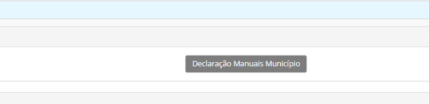

Apoio aos manuais escolares (2º ciclo)
Para o ano letivo 2018/2019, a Câmara Municipal do Funchal irá apoiar os alunos residentes no concelho do Funchal das escolas do 2º ciclo públicas e privadas com um voucher, que poderá ser trocado nos estabelecimentos aderentes ao Programa por manuais escolares definidos por cada escola e ano de escolaridade do/a aluno/a.
A declaração para atribuição dos manuais escolares deve ser solicitada na escola onde a aluno efetuou a matrícula.
A escola, após a matrícula dos alunos dos alunos, deve aguardar o escalão do ASE dos alunos e só depois poderá ter acesso ao documento de apoio aos manuais escolares da Câmara Municipal do Funchal
Para poder exportar o documento deve:
Ir ao aluno
Separador ASE
Clicar em Declaração Manuais Municipio

A escola deve usar esta declaração, pois a mesma defende as Escolas certificando apenas, o que é possivel, face à documentação apresentada pelos encarregados de educação, traduzindo a situação atual e não outra futura que venha a ser demosntrada mais tarde.
Este ano, as candidaturas poderão ser realizadas através de uma Plataforma online, dispensando a necessidade de deslocação à Loja do Munícipe do Funchal.
No que respeita ao 2º ciclo, os documentos necessários para submeter a candidatura são:
Cópia do cartão de cidadão do/a aluno/a
Cópia do Cartão de Cidadão do/ encarregado/a de educação
Declaração de matrícula, com indicação se é abrangido/a pela ASE. A declaração será emitida pela escola.
Atestado de Residência emitida da junta de freguesia do local de morada.